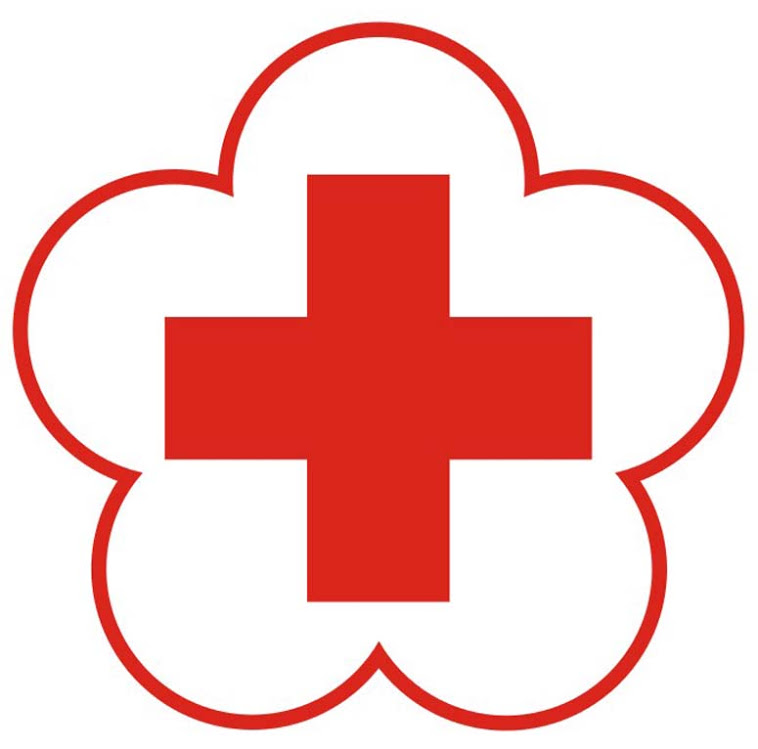
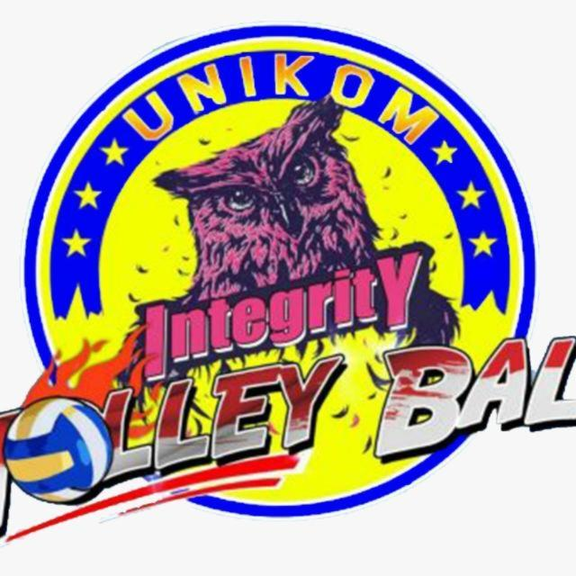

Saya awal mengikuti organisasi Bulu Tangkis di luar sekolah dari kelas 5 SD sampai kelas 6 semester 2,
saya keluar dari organisasi tersebut dikarenakan Gor Koni yang berada di Jl.Jakarta yang dekat rumah
mau renovasi sedangkan Gor penggantinya lumayan jauh di daerah Kopo. Saya lanjut mengikuti organisasi
Bulu Tangkis pas saya masuk SMP, disana saya bergabung dengan klub ekstrakurikuler Bulu Tangkis Di sekolah.
Digital
Saya awal mengikuti organisasi atau ekstrakurikuler Digital saat saya awal mula masuk SMA. Digital adalah
organisasi yang mempelajari dunia teknologi, organisasi tersebut memiliki 6 divisi yaitu : Desain Grafis,
E-Sport, Programming, Robotik, Video Editing, Aplikasi Perkantoran.
Palang Merah Remaja

Saya awal mengikuti organisasi atau ekstrakurikuler PMR saat saya awal mula masuk SMA. Ekstrakurikuler
Palang Merah Remaja (PMR) merupakan salah satu ekstrakurikuler yang bergerak dibidang kepalangmerahan
dimana ekstrakurikuler Palang Merah Remaja (PMR) adalah wadah pembinaan anggota remaja dengan tujuan
membangun dan mengembangkan karakter anggota PMR yang berpedoman pada tribakti PMR dan prinsip
kepalangmerahan untuk menjadi relawan masa depan.
Bola Voli

Saya awal mengikuti organisasi atau UKM Bola Voli saat saya awal mula masuk Universitas. Sebuah Unit
Kegiatan Mahasiswa (UKM) Bola voli yang berada di Universitas Komputer Indonesia (UNIKOM).